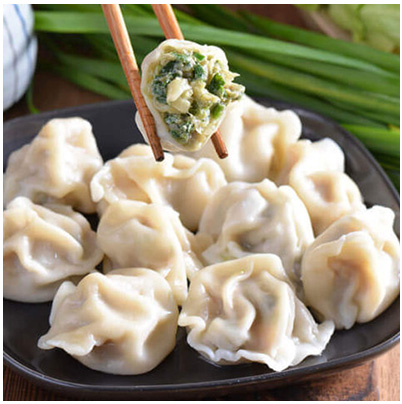

Chinese Dumplings
- Origin: Chinese
- Source: Own recipe
- Category: Main Dish, Comfort Food
Chinese dumplings, also known as Jiaozi, are a beloved staple in Chinese cuisine, enjoyed by many during family gatherings, especially during the Chinese New Year.
These delightful pockets of joy are versatile, as they can be steamed, boiled,or pan-fried, offering a different culinary experience with each method.
They can be filled with a variety of fillings such as pork, shrimp, vegetables, or a mixture, and paired with a simple dipping sauce, they become a dish that is almost impossible to resist.
Crafting them from scratch provides a warm, familial, and authentic Chinese dining experience, where everyone can gather around and enjoy the process of making and eating them together.
Recipe Ingredients
- Dumpling wrappers (store-bought or homemade)
- Ground pork or chicken
- Shrimps (optional)
- Cabbage or Chinese chives
- Pure vanilla extract
- Ginger, grated
- Garlic, minced
- Soy sauce
- Sesame oil
- Salt
- Salt and pepper to taste
Recipe Steps
- In a large bowl, combine the meat, shrimps (if using), cabbage or chives, ginger, and garlic. Mix in soy sauce, sesame oil, salt, and pepper.
- Lay out the dumpling wrappers on a clean surface. Add a small spoonful of the filling to the center of each.
- Wet the wrapper edges with water. Fold it to create a half-moon shape; seal the edges by pinching, create pleats if desired.
- Repeat until all wrappers are filled.
- To boil, bring a pot of water to a boil, add the dumplings, and cook until they float, about 3-4 minutes.
- for a pan-fried option, heat oil in a pan, add the dumplings, cook until golden at the bottom, then add water and cover to steam.
- Serve hot with a dipping sauce made from soy sauce, a bit of sesame oil, optionally with chopped green onions and a splash of vinegar.


Additional Food Images
My Recipe
Xiao Long Bao (Soup Dumplings)

- Origin: Chinese
- Source: Traditional Recipe
- Category: Dim Sum, Comfort Food
Xiao Long Bao, also known as soup dumplings, are a staple in Chinese cuisine, particularly in Shanghai and the surrounding regions. These delicate dumplings are filled with a savory pork filling and a rich, gelatinous broth that melts in your mouth.
The secret to a perfect Xiao Long Bao lies in the broth, which is made by simmering pork bones and skin to create a rich gelatin. This gelatin is then mixed with the meat filling, creating a dumpling that bursts with flavor and soup when you bite into it.
Serve it with black vinegar and thinly sliced ginger for a gastronomic experience that is both comforting and exhilarating.
Recipe Ingredients

- Pork shoulder or pork neck, minced
- Aspic (jellied pork broth)
- Shaoxing wine
- Soy sauce
- Ginger, grated
- Green onions, chopped
- Sesame oil
- Salt and white pepper to taste
- Dumpling wrappers
Recipe Steps
- Prepare the aspic by simmering pork bones and skin with spices until rich and flavorful. Let it cool and solidify.
- Mix the minced pork with Shaoxing wine, soy sauce, ginger, green onions, sesame oil, salt, and white pepper. Add diced aspic to the mixture.
- Place a small amount of filling in the center of a dumpling wrapper. Gather the edges and pleat them together to form the dumpling, ensuring it is well sealed.
- Steam the dumplings in a bamboo steamer for about 15-20 minutes until the dumplings are cooked through and the broth inside is hot and liquid.
- Serve the Xiao Long Bao hot with black vinegar and thinly sliced ginger.


My Recipe
Stewed Eggs with Minced Meat

- Origin: Chinese
- Source: Family recipe
- Category: Main Dish, Comfort Food
Stewed eggs with minced meat is a comforting and hearty dish that brings together the richness of eggs with the savory notes of minced meat, all stewed to perfection in a flavorful sauce.
This dish is a staple in many households, offering a satisfying and protein-packed meal that is both nourishing and delicious. It pairs wonderfully with a bowl of steamed rice or noodles.
The tender eggs and the minced meat create a harmonious blend of textures, making every bite a delightful experience. It is a simple yet fulfilling dish that is sure to warm your heart and satisfy your palate.
Recipe Ingredients

- Eggs, hard-boiled and peeled
- Minced meat (pork or chicken)
- Soy sauce
- Ginger, grated
- Garlic, minced
- Green onions, chopped
- Star anise (optional)
- Sesame oil
- Salt and pepper to taste
Recipe Steps
- In a bowl, mix the minced meat with soy sauce, ginger, and garlic. Set aside to marinate for a while.
- In a pot, heat some oil and sauté the marinated meat until it turns brown and is cooked through.
- Add the hard-boiled eggs to the pot and stir gently to combine with the meat.
- Add enough water to cover the ingredients, bring to a boil, then add soy sauce, star anise (if using), and season with salt and pepper.
- Reduce the heat and let it simmer for 15-20 minutes, allowing the flavors to meld and the sauce to thicken slightly.
- Before serving, stir in the sesame oil and garnish with chopped green onions.
- Serve hot with a side of steamed rice or noodles.

Additional Food Images
My Recipe
Coca-Cola Chicken

- Origin: Fusion
- Source: Family recipe
- Category: Main Dish, Comfort Food
Coca-Cola chicken is a delightful dish that combines the sweetness of Coca-Cola with the savory taste of chicken, creating a unique and delicious flavor profile.
The Coca-Cola not only adds a sweet note but also tenderizes the chicken, making it soft and juicy. It's a quick and easy recipe that is sure to be a hit at family dinners.
Serve it with some steamed rice or noodles and a side of vegetables for a balanced meal that is both satisfying and delicious.
Recipe Ingredients

- Chicken thighs or breasts
- Coca-Cola
- Soy sauce
- Ginger, grated
- Garlic, minced
- Green onions, chopped
- Sesame oil
- Salt and pepper to taste
Recipe Steps
- In a bowl, marinate the chicken with Coca-Cola, soy sauce, ginger, and garlic. Let it marinate for at least 30 minutes.
- In a pan, heat some oil over medium heat. Add the chicken pieces and cook until they turn golden brown.
- Add the marinade to the pan and bring it to a boil. Reduce the heat and let it simmer until the sauce thickens.
- Stir in the sesame oil and green onions. Cook for another 2-3 minutes.
- Serve the Coca-Cola chicken hot with steamed rice or noodles.


Additional Food Images
My Recipe
Masala Dish

- Origin: Indian
- Source: Traditional Recipe
- Category: Main Dish, Spicy Food
The Masala dish is a cornerstone in Indian cuisine, known for its rich blend of spices that create a symphony of flavors in every bite. It can be made with a variety of main ingredients including chicken, lamb, or vegetables.
The secret to a great Masala dish lies in its spice blend, which includes a mix of ground spices such as coriander, cumin, and garam masala, giving the dish its distinctive aromatic and spicy character.
Serve it with a side of naan or basmati rice to have a complete, hearty meal that is both comforting and satisfying.
Recipe Ingredients

- Chicken or lamb pieces (or a mix of vegetables for a vegetarian option)
- Onions, finely chopped
- Tomatoes, chopped
- Ginger-garlic paste
- Green chilies, slit
- Coriander powder
- Cumin powder
- Garam masala
- Turmeric powder
- Red chili powder
- Fresh coriander leaves for garnish
- Salt to taste
- Oil for cooking
Recipe Steps
- Heat oil in a pan, add the chopped onions, and sauté until they turn golden brown.
- Add the ginger-garlic paste and green chilies, and sauté for a few more minutes.
- Add the chopped tomatoes and cook until they turn mushy and the oil separates from the masala.
- Add the chicken, lamb, or vegetables along with the dry spices and mix well.
- Cover and cook on a low flame until the main ingredient is cooked through and the flavors are well blended.
- Garnish with fresh coriander leaves and serve hot with naan or basmati rice.


Additional Food Images